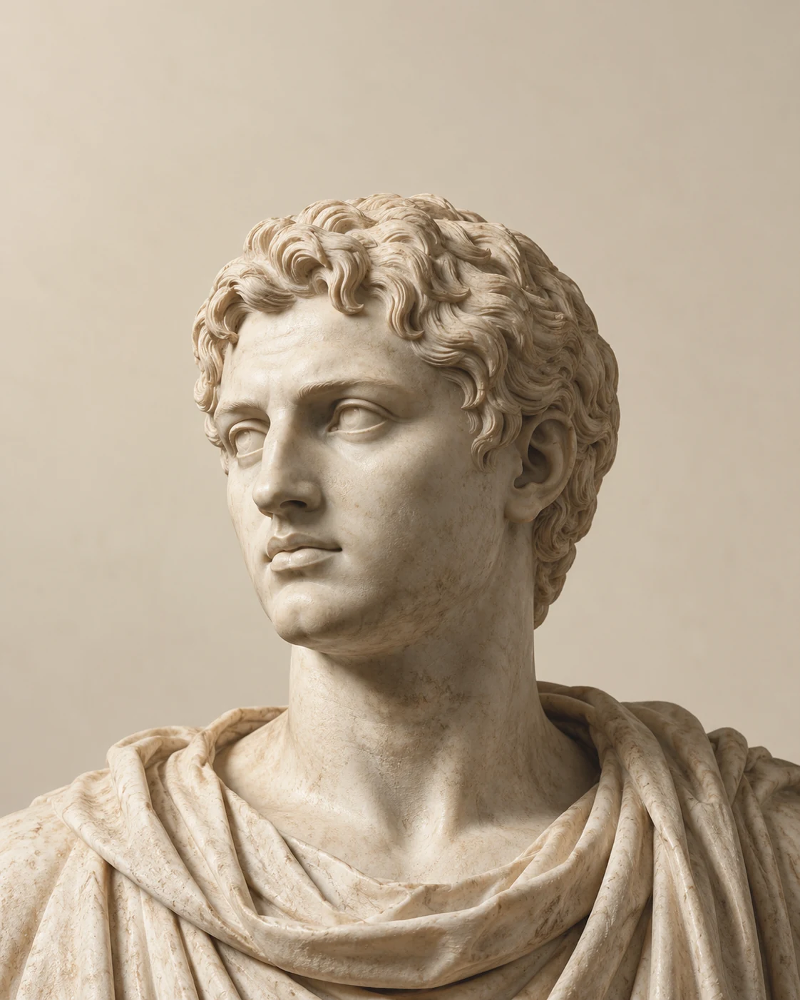

Mobilité & Ingénierie
Audi
« Écoute ! »
Le nom du constructeur traduit le mot allemand « horch », impératif du verbe horchen : écouter. Le nom d’August Horch, le fondateur, devient ainsi Audi.

Carpe diem.
Aucune citation trouvée.
Le latin au quotidien VIII découvertes
Sur une calandre, dans un sortilège ou au détour d’une phrase. On le croise partout. Et parfois, on le parle déjà.
Mobilité & Ingénierie
« Écoute ! »
Le nom du constructeur traduit le mot allemand « horch », impératif du verbe horchen : écouter. Le nom d’August Horch, le fondateur, devient ainsi Audi.
Imaginaire populaire
« J’attends un protecteur »
Dans l’univers de Harry Potter, quelques mots latins suffisent à invoquer une présence protectrice. Une langue ancienne, un imaginaire bien vivant.
Technologie
« Vif & Piquant »
Derrière le nom familier de l’informatique, un adjectif latin : vif, aigu, piquant.
Dans nos phrases
« Et toutes les autres choses »
Trois lettres pour laisser la liste ouverte. Littéralement : « et les autres choses ».
Philosophie & Sport
Une marque. Cinq mots.
Une âme saine
dans un corps sain.
Le nom assemble les initiales de Anima Sana In Corpore Sano, une variation de la célèbre maxime de Juvénal.
Trois expressions à redécouvrir. Ouvrez-les.
Avant l’expérience ou la vérification, à partir d’une première idée.
« A priori, cette idée devrait fonctionner. »
On inverse les rôles ou le sens de la relation : et réciproquement.
« Je t’aide, et vice versa. »
On examine le cas opposé pour en tirer une autre conclusion.
Une expression pour raisonner par opposition.